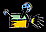

Volcano Terminology
The study of volcanoes, or Volcanology, includes many odd
terms. How many of these do you know?
The term nuée ardente, or "glowing cloud"
was first used by La Croix (1904)
in his description of the volcanic flows he observed in the
1902 eruption of Mt Pelée, a historically active volcano on
the island of Martinique.
There are many different types of volcanic eruptions and landforms. They can be classified according to the degree of "explosiveness" and the height of the eruption column:
Investigate each type by clicking on a picture
each link will open its own browser window

Volcanoes in Action

Watch a computer animation of a Plinian style eruption, modeled after the AD 79 eruption of Vesuvius which destroyed the city of Pompeii. Use the animation to understand the formation of Plinian eruption columns and how their collapse generates pyroclastic flows [295k QuickTime movie].